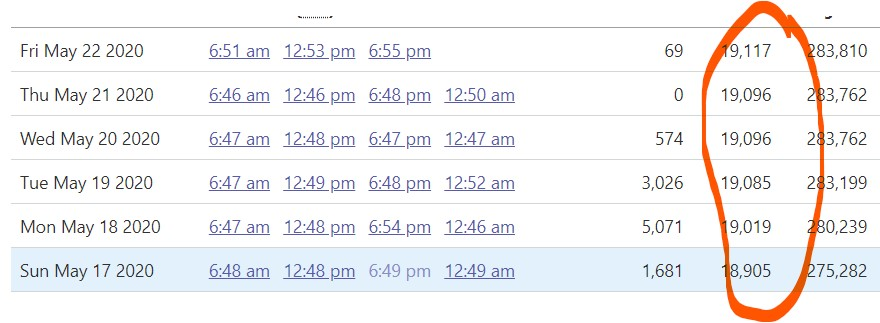

WA historical for the last 3-4 days is borked

Comments
stale[bot] commented on June 14, 2020 at 2:27 am
This issue has been automatically marked as stale because it has not had recent activity. It will be closed if no further activity occurs. Thank you for your contributions!
stale[bot] commented on June 24, 2020 at 3:09 am
This issue has been closed because it was stale for 15 days, and there was no further activity on it for 10 days. You can feel free to re-open it if the issue is important, and label it as “not stale.”
Disclaimer: I’m new here, so my opinions are based on limited context. But I have them in spades! :)
Looking at the screenshots associated with those days, it seems that the data entry was probably correct at the time of entry. (although checkers are not pulling this info from the main dashboard, so the numbers don’t quite match the dashboard screenshots)
As I see it, the main issue here is that washington doesn’t push new cases to their site “evenly” every day. They may queue up a batch and then dump it onto the site, and when they do, they assign each new case to the day it was reported to the doctor/hospital. (not the day it was posted to the site)
Since it’s been a few days, the sequence of cumulative case counts for 5/17 through 5/22 now looks like this, according to washington:
5/17: 18782 5/18: 18962 5/19: 19139 5/20: 19273 5/21: 19422 5/22: 19731
The short term solution here is to do another data sync, similar to the one done in https://github.com/COVID19Tracking/issues/issues/424 and others.
The long term solution is some sort of regular backfill process for states that update their historical data over time. (there are several, washington is one example)